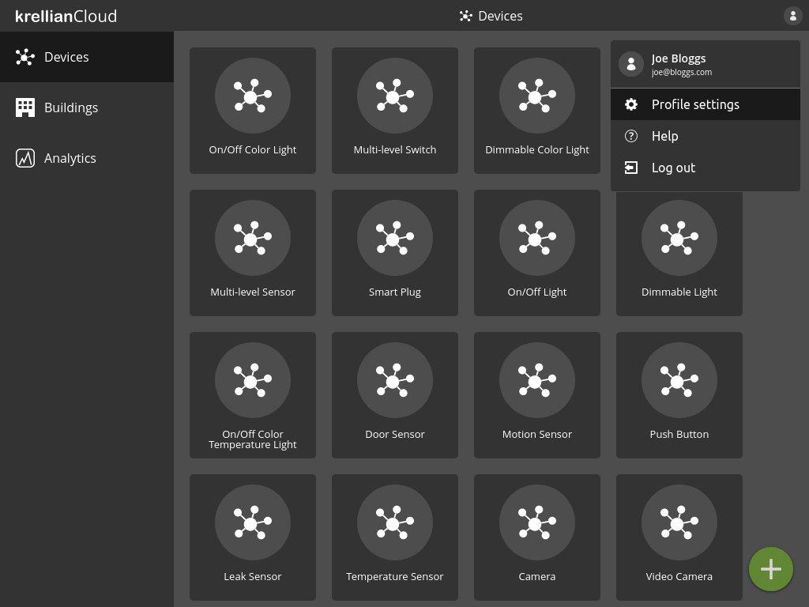
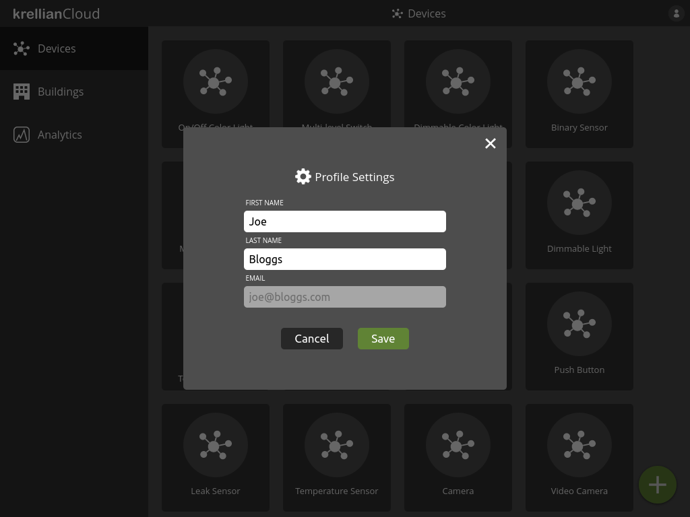

Profile
Edit Profile
To edit your profile settings:
- Click on the profile menu icon at the top right of the screen
- Click the "Profile settings" option
- Edit the desired fields
- Click "Save"
Note: Currently only the user's first name and last name can be edited. Email address can not be edited.

Profile settings option in profile menu
Profile settings dialog